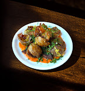

Bluebeard
Fusion food with local flair — great for a date night or when you’re feeling a little fancy.
Fusion food with local flair — great for a date night or when you’re feeling a little fancy.
Solid, affordable Chinese takeout that always delivers. Their fried rice and orange chicken never miss.
Big New Orleans flavor without the price tag. Load up on jambalaya and cornbread — you’ll be back.